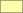
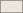

Zuständigkeit Wald
Forstrevier Weinland Süd
Staatswald Hegi-Töss
Staatswald Kyburg
Illnau-Effrektikon / Lindau

Winterthur Revier West

Winterthur Revier Süd
Winterthur Revier Ost
Winterthur Revier HKOW